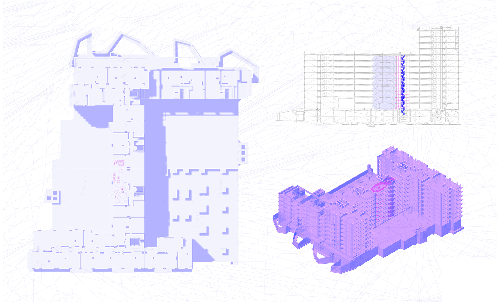

VIOGEN
LA ARQUITECTURA QUE NO QUIERE SER VISTA
Una nueva forma de proteger
LA ARQUITECTURA QUE NO QUIERE SER VISTA
Una nueva forma de proteger
La violencia de género obliga a muchas mujeres a desaparecer de su entorno para recuperar su seguridad. Cambian de vivienda, de barrio y, en ocasiones, de identidad. Sin embargo, los espacios destinados a protegerlas siguen siendo reconocibles dentro de la ciudad.
Este proyecto nace de una contradicción: cuanto más visible es el refugio, más vulnerable puede llegar a ser. La propuesta plantea una arquitectura que renuncia a mostrarse.


HABITAR ENTRE LAS GRIETAS
Encontrar refugio en lo que ya existe
La ciudad está llena de espacios olvidados, vacíos y rincones que pasan desapercibidos. Lugares que, pese a formar parte de edificios habitados, permanecen fuera de uso.
El proyecto identifica estos huecos como oportunidades para insertar una nueva capa de arquitectura. No se construye una ciudad nueva. Se ocupa silenciosamente la que ya existe.
UNA SEGUNDA CIUDAD OCULTA
Lo que permanece invisible
Desde el exterior nada cambia. Las fachadas siguen siendo las mismas, los accesos continúan funcionando y la vida cotidiana mantiene su ritmo habitual.
Sin embargo, detrás de esa aparente normalidad surge una infraestructura invisible que permite albergar nuevas formas de habitar.

EL ARTE DE DESAPARECER
El mimetismo como estrategia
La protección no se alcanza mediante muros más altos o sistemas de seguridad complejos, sino mediante la capacidad de no ser identificado. La arquitectura aprende a esconderse.
UNA COLUMNA PARA RECONSTRUIR VIDAS
El núcleo como origen del sistema
La intervención se organiza alrededor de una estructura modular prefabricada de hormigón. Este núcleo actúa simultáneamente como soporte, infraestructura y elemento de conexión.
EL CORAZÓN OCULTO
Infraestructura invisible
En el interior del núcleo se concentran todas las instalaciones necesarias para el funcionamiento de las viviendas. Suministros, ventilación, comunicaciones y circulaciones verticales quedan integrados dentro de un único elemento técnico.


ESPACIOS QUE RESPIRAN
La vivienda como organismo adaptable
Las unidades habitacionales se desarrollan a partir de envolventes ligeras vinculadas al núcleo estructural. Su configuración flexible permite responder a diferentes situaciones personales.
PROTEGER SIN DEJAR HUELLA
Una arquitectura de la ausencia
Plantea una arquitectura que desaparece para que otras personas puedan volver a aparecer. Una arquitectura que encuentra en la invisibilidad su mayor capacidad de acción.
SÍNTESIS: EL RELATO COMPLETO
La arquitectura del silencio condensada en un único manifiesto gráfico.